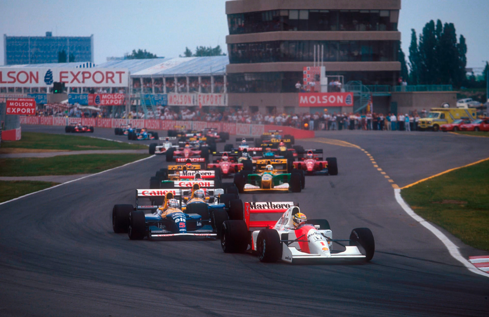

A ilusão da vitória
Mansell erra, sai da pista e acusa Senna, que havia sido pole mas abandona. Berger vence com calma e Patrese abandona. Schumacher é 2º e Wendlinger 4º. Comas marca primeiro ponto para a Ligier e Katayama perde 2 pontos perto do final. Câmbios de Gugelmin e Fittipaldi quebram novamente.
Por Francisco Santos
Não fosse a crua realidade da inegável supremacia dos Williams-Renault, e este fim de semana de ocasional brilho dos McLaren-Honda podería ter algum significado para os desiludidos seguidores deste campeonato em que, repito, nada vai mudar, apesar de... Mansell. Apesar desta primeira pole de Ayrton em 1992; apesar da segunda vitória consecutiva da McLaren, agora por um calmo, compenetrado e eficiente Gcrhard Berger; apesar do abandono dos dois Williams; apesar de mais um pódio de Michael Schumacher, agora em segundo lugar; apesar de todas estas anomalias meramente furtuitas, o campeonato continua na mesma. Realmente não foi o desfecho deste GP que mudou nada. Tudo vai continuar na mesma.
Realmente o único adversário de Mansell continua a ser... ele mesmo.
Esta prova, apesar das cambiantes de posições na frente não merece ainda a classificação de corrida, já que tudo foi provocado pelos abandonos sucessivos de Mansell, Senna, Patrese e Brundle. No entanto foi bom ver pela primeira vez este ano Senna abrir o fim de semana com o melhor tempo e guardá-lo até domingo de manhã. Foi bom ter pelo segundo GP consecutivo outro carro que não um Williams a liderar a prova, e a... ganhá-la. Foi bom ver os quatro carros com motor Ilmor chegar ao fim. Foi interessante ver a performance de Katayama, que só perdeu 2 pontos a 7 voltas do final por ter excedido as rotações do motor Lamborghini. Foi gratificante ter Wendlinger no quarto lugar, mesmo que isso só tivesse sido possível porque problemas de freios e com um coletor de escapamento quebrado no Tyrrell não permitiram a De Cesaris de o atacar.
Foi uma prova de “faz-de-conta”. Digamos que o campeonato saiu de férias e deixou que se fizesse esta graça, completamente fora dos padrões de 92. Que ninguém leve a sério o que se passou em Montreal. Foi só de brincadeirinha.
Talvez o único episódio a sério tivesse sido a precipitação de Nigel Mansell. Depois do azar de Mônaco, o “brutânico”, sob pressão psicológica de ver Senna à sua frente com um carro mais lento, forçou uma ultrapassagem onde “não não podia dar certo”, segundo Berger, que com um carro mais rápido do que Senna já havia tentado passar Patrese na aproximação da mesma chicane e vira que a saída do trilho limpo da pista seria fatal. Mansell, numa de suas tentativas desesperadas tentou, encontrou, claro, um McLaren mais largo”, pisou a parte suja da pista, e perdeu aderência na freada, saindo em frente, voando por cima das zebras e caindo de bico do outro lado da pista. Senna, que havia feito a chicane do modo mais convencional quase que atropela o Williams, mas consegue evitar o acidente, enquanto Patrese levanta o pé, e Berger aproveita para o passar.
Como Piquet referia no início do ano: “E só Mansell sentir-se apertado...”.
Circuito de rua
Este circuito misto da Ilha de Notre Dame, em Montreal, tem muito das características de um circuito de rua: estreito, sinuoso e muito pouco usado, pelo que se forma uma camada de poeira misturada com a maresia que o toma em alguns pontos bastante escorregadio, além de levar tempo para deixar borracha no piso. Segundo Mansell, “com o calor forma-se uma camada de sujidade e por vezes a linha ideal não fica bem limpa; fora desse trilho é excepcionalmente escorregadia e pode causar momentos dramáticos”. Ele que o diga... A propósito de momentos difíceis: o espetáculo televisivo anda perdendo os poucos momentos emocionantes das provas - depois de não termos visto a parada de box de Mansell no Principado, agora também o realizador de Bernie Ecclestone perdeu o início da saída de Mansell.
Sassetti azarado
Praticamente não houve pré-qualificações. Os dois motores Judd da Andréa Moda não foram embarcados no cargueiro de Inglaterra porque “o comandante pediu para descarregarem peso do avião devido às más condições atmosféricas”. Teve de ser emprestado um V10 da Brabham. Com circuitos elétricos e gasolina diferentes, Moreno fez só quatro voltas. Com apenas quatro carros já qualificados, foi um desperdício de tempo. Será este o espetáculo que Ecclestone quer dar à F1?
Volta à pole
A surpresa do fim de semana anunciou-se cedo quando Senna e Berger começaram a fazer os melhores tempos logo na primeira sessão de treinos. Era a primeira vez no ano que Senna liderava uma sessão com o melhor tempo. A pista estava muito escorregadia e houve várias rodadas, sendo que apenas Martini rodou cinco vezes. Na tarde do mesmo dia, Senna melhorou seu tempo e se tornou o primeiro a superar o tempo da pole position do ano anterior. Ele bateu Mansell por 0,5 segundos e conquistou a pole provisória. A chuva lavou a pista, deixando-a mais lenta para o sábado. Por isso, mesmo que Mansell tenha sido o mais rápido em ambas as sessões de treino, ele não conseguiu superar o tempo de Ayrton da véspera. A cinco minutos do fim da última sessão de qualificação, Patrese conseguiu o segundo melhor tempo, ao lado de Ayrton. Vale destacar o sexto tempo de Herbert e o décimo primeiro tempo de Katayama.

Quem espera sempre alcança
O warm-up mostrou que as coisas iriam ser diferentes, com Brundle em 2º apenas a 0,001s de Mansell, e Senna em 5º, na frente de Herbert. Tudo dependería se Senna conseguisse chegar à primeira curva em primeiro. Se isso acontecesse, havería certamente espetáculo de Mansell. Ao final da primeira volta era Senna, Mansell, Patrese, Berger, Schumacher, Brundle, Herbert, Hakkinen, Alesi, Wendlinger e Capelli.
Esta fila de 11 carros circularia junto até à 15ªvolta. Senna não queria forçar os pneus, nem poderia fugir dos Williams. À 3a volta, Gachot e Katayama, ambos em Venturi, batem na aproximação do gancho. O belga vai ao box, volta e é abalroado por Grouillard, sendo desclassificado quando o seu carro é empurrado por comissários de pista. O japonês continua sua excelente performance. À 15a volta dá-se a grande cena, que já descrevi. O que não tem descrição é a reação de Mansell, que depois de ficar teatralmenle no carro por minuto e meio, parado no meio da pista até ser içado por comissários, dá um show de esbrafejamentos com meio mundo, fazendo todos crer que o acidente tinha sido culpa de Senna que o teria empurrado para fora da pista. Claro que os Comissários Desportivo, a quem Mansell foi imediatamente fazer queixa, nem ligaram...
De tão mau humor terá ficado Capelli. Com razões de sobra para se queixar dele mesmo. Pela terceira vez consecutiva plantou o Ferrari contra um muro, só não se magoando feio por muita sorte. Entretanto, dois McLaren na frente, com Berger colado na traseira de Senna. Atrás, Patrese parecia não causar perigo. Que filme tão diferente... Mas durou pouco: Senna começaria por ter problema de troca de marchas e depois o motor parou - problema eletrônico. Berger na frente. Atrás, Patrese. Mas, por pouco tempo: ficava também sem câmbio e parava. Aliás parecia que deu uma epidemia de problemas de câmbio pois Berger ficou sem uso dos botões de troca automática e teve de passar a usar as alavancas de troca de marcha uma a uma, como na Ferrari e na Williams, a que já não estava habituado: “demorou umas seis voltas a readaptar-me e tive de mudar o meu estilo de pilotagem”. Depois foi manter, até porque Brundle, além de estar afastado, abandonaria. Ficava Schumacher, que desta vez era mais lento que o britânico, e estava ainda mais atrasado. Uma corrida que Berger vence porque os dois da frente abandonam. Mas ele teve a calma que outros não tiveram, e soube combater os problemas. Acabou merecendo esta vitória de surpresa. O terceiro e quarto lugares de Alesi, que baixou para nono logo na primeira volta, e Wendlinger, que teve problemas de câmbio no final, foram surpresas só possíveis com os abandonos lá na frente. Tanto Gugelmin quanto Fittipaldi abandonariam com os câmbios quebrados mais uma vez, Christian a duas voltas do final.□